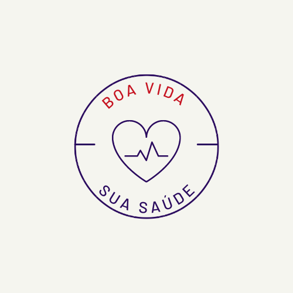

|  | |
Quem somosA procura por informação relacionada com a saúde, fundamentalmente, através dos principais motores de busca, tem vindo a crescer de uma forma paulatina ao longo dos anos, constituindo-se hoje, indiscutivelmente, como o conteúdo com o maior volume de pesquisas na Internet. O boavidasuasaude.com.br pretende ser um repositório de informação abrangente, credível e de elevada qualidade, disponível de forma gratuita para todos os seus visitantes. O reconhecimento que os motores de busca nos atribuem, através das posições que ocupamos nas pesquisas, são o reflexo mais elucidativo da qualidade e credibilidade da informação que disponibilizamos. Contamos com um grupo de médicos altamente qualificados e conceituados, especialistas de excelência, que connosco colaboram porque acreditam no nosso trabalho e nos valores que partilhamos. O boavidasuasaude.com.br assume-se, nas áreas onde disponibiliza conteúdos, um dos principais repositórios de informação de Saúde em Língua Portuguesa, com mais de 4 000 000 (quatro milhões) de visitas únicas mensais, tendo registado no último ano uma taxa de crescimento superior a 110%. Para além de Portugal, somos visitados maioritariamente pelos países de língua Portuguesa, mas também pelas grandes comunidades que falam Português um pouco por todo o mundo. Os resultados obtidos são a melhor demonstração da qualidade e confiança que o boavidasuasaude.com.br pode oferecer aos seus visitantes e aos inúmeros profissionais de saúde que connosco colaboram. |
|
|
© Desenvolvido por Marcos Eduardo Penariol Moretti - 2022 |
|